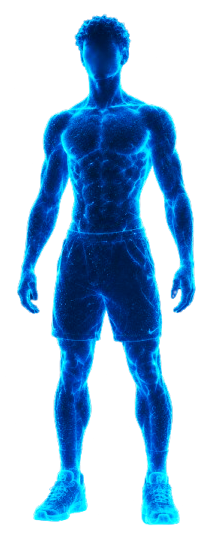

BIOMETRIC CORE
PERFORMANCE
Monitoramento físico, evolução e análise inteligente do seu desempenho.
MONITORAMENTO ATIVO
DADOS BIOMÉTRICOS LOCAIS
ESTADO FÍSICO
78%
OTIMIZAÇÃO
PESO ATUAL
63
KG
META
70
KG
ALTURA
1,75
M
PROGRESSO
42%
META

BIOMETRIC
HUMAN
SCAN // ACTIVE
FOCO ATUAL
OMBROS
GRUPO MUSCULAR PRIORITÁRIO
PESO ATUAL
63
KG
META DE PESO
70
KG
ALTURA
1,75
M
% GORDURA
--
%
MASSA MAGRA
--
KG
PROGRESSO
42%
META
EVOLUÇÃO AO VIVO+3,2 kg
ESTRESSE MONITORAMENTOESTÁVEL
CORTISOL BIOMARCADORNÃO MEDIDO
PERFORMANCE PROCESSANDO84%
DADOS PRINCIPAIS
Biometria
TRAINING MATRIX // 02
MATRIZ DE TREINO
Controle da rotina, estímulo e evolução muscular.
SISTEMA ATIVOMONITORAMENTO CONTÍNUO
VISUALIZAÇÃOBODY // 01
SISTEMA ONLINEPREPARAÇÃO
ATIVA
TRAINING INTELLIGENCE
ANALISANDO
CONTROLE DE TREINO
TREINO ATUAL
Peito + Tríceps + Ombros
Sessão programada para desenvolvimento de membros superiores.
FREQUÊNCIA2X / SEM
SÉRIES3 × 12
DURAÇÃO1–2 H
PRÓXIMA SESSÃOSEXTA-FEIRA→
MISSION OBJECTIVE // 03
MISSÃO ATIVA
EVOLUÇÃO DE PERFORMANCE
Uma missão. Um alvo. Dados acompanhando a trajetória.
PROGRESSO42%MONITORANDO
TRAJETÓRIA DO OBJETIVOMISSION
// 004
ATUAL63,0 kg
META70,0 kg
INÍCIOPROGRESSÃOOBJETIVO
EVOLUÇÃO+3,2 kgHISTÓRICO
OTIMIZAÇÃO78%ATIVO
FOCOOMBROSPRIORITÁRIO
SF
SEXTA-FEIRA / MISSION COREObjetivo ativo. Histórico de evolução sendo monitorado.A missão será recalculada conforme novos dados forem registrados.
ANÁLISE CONTÍNUA // 04
ANÁLISE ATIVA
EVOLUÇÃO BIOMÉTRICA
Leitura dos dados disponíveis e acompanhamento do histórico.
SEXTA-FEIRA / BIOMETRIC CORE00:00:00
ANALISANDO DADOS BIOMÉTRICOS
Evolução registrada desde o início do acompanhamento.
Indicador comportamental preparado para análise futura.
Aguardando dado de exame ou sensor compatível.
SEM DADO CLÍNICOÍndice interno de acompanhamento da performance.
SF
SEXTA-FEIRACruzando evolução, treinamento e histórico...O sistema permanece analisando os dados disponíveis.
SF
SEXTA-FEIRA / ANÁLISE
Análise de Performance
Seu grupo muscular prioritário atual é ombros. A frequência programada é de 2 estímulos semanais, com próximo estímulo previsto para hoje.
FREQUÊNCIA2X
FOCOOMBROS
CONSISTÊNCIA84%
RECOMENDAÇÃO
Manter consistência nos treinos, registrar sua evolução e acompanhar o desenvolvimento dos grupos musculares prioritários ao longo das semanas.